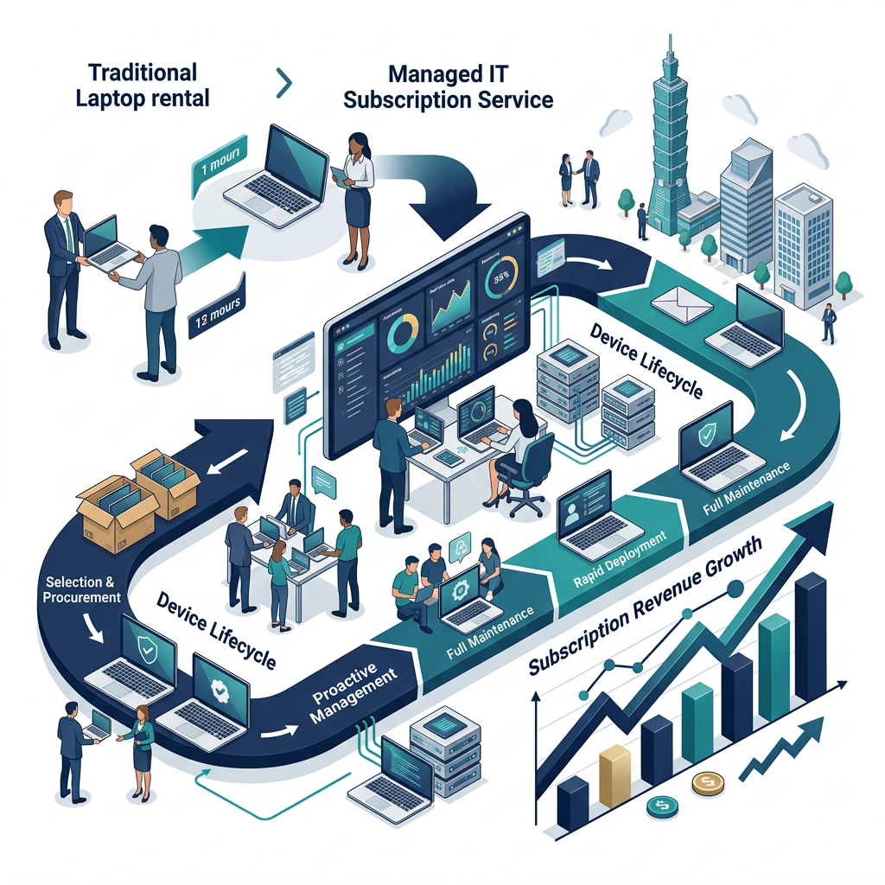

從「租電腦」升級成「企業 IT 訂閱服務」，把硬體租賃、快速換機、端點管理、M365、資安與維運整合成更高續約、更高毛利、也更難被比價的商業模式。

台灣小租目前的核心，不只是提供筆電，而是在賣「企業低門檻取得設備 + 維護服務 + 快速替換」。這是一個很適合往訂閱制、平台化與高附加價值服務升級的起點。
若只講租筆電，市場很容易進入比價，客戶會把你當成硬體供應商，而不是長期服務商。
若沒有 M365、資安、端點管理、備份與 IT 維護，毛利會受限於硬體成本與維修壓力。
若未來要規模化，訂單、資產、維修、回收、再租賃與多據點服務都要變成標準流程。
台灣在地支援、快速換機、商務機種聚焦、企業服務導向、可建立長期租賃與維運關係。
若只賣租機，差異化不足；規模不夠時，倉儲、維修、備品與跨區服務壓力會偏高。
AI、遠端辦公、多據點營運、中小企業訂閱化需求上升，可升級成企業 IT 訂閱服務。
大型 SI、品牌 DaaS、平台型租賃玩家壓價；若市場只看價格，容易被低價競爭拖住。
線上申請、標準租期、標準換機、標準回收，提高營運效率。
新機租賃、整備再出租、設備生命週期管理，讓資產報酬更高。
從單機租賃升級成筆電 + 螢幕 + 周邊 + 維運 + 資安 + M365 的組合服務。
先把租賃 + M365 / 資安 / 維護做成高毛利組合包。
建立標準化企業方案，減少每案重做，提高業務成交率。
建立中南部維修 / 備品 / 區域夥伴聯盟，放大服務半徑。
建立設備生命週期後台，從租機變成企業資產管理入口。
台灣小租下一步不應該只是把更多電腦租出去，而是把「設備租賃」升級成「企業 IT 訂閱服務平台」。未來最值錢的，不是設備本身，而是企業持續依賴你的維運能力、換機能力、管理能力與自動化能力。